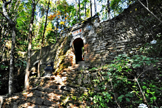

安徽白崖寨攀龙门
地理位置
安徽白崖寨攀龙门位于安徽省安庆市宿松县趾凤乡境内的白崖山上，是一处融合自然风光、历史文化与军事防御功能的古老门楼。
历史背景
白崖寨始建于元朝末期，因建于白崖山而得名，地势险要，易守难攻，自古为兵家必争之地，被誉为“南国小长城”。
建筑特色
攀龙门采用坚固石材建造，设计精巧，结构稳固，体现了古代工匠的高超技艺和军事防御的实用性。
历史意义
攀龙门见证了白崖寨的沧桑变迁与辉煌历史，是连接山内外的重要通道，无数英雄豪杰曾在此集结保卫家园。
自然与人文景观
白崖寨内留存着许多历史遗迹与人文景观，如白崖禅寺、万年台、魁星阁等，保留着浓厚的历史韵味与文化底蕴。
旅游业发展
随着《黑神话：悟空》游戏的走红，白崖寨攀龙门作为取景地受到广泛关注，带动了当地旅游业的发展。
旅游体验
游客穿过攀龙门，可以感受到历史的厚重与庄严，欣赏白崖寨的壮丽景色，了解中国古代军事文化，感受当地风情。
总结
攀龙门这座见证了无数历史风云的古老门楼，以它独有的魅力吸引着游客，成为一道亮丽的风景线。
图片
游戏截图

实物图片
